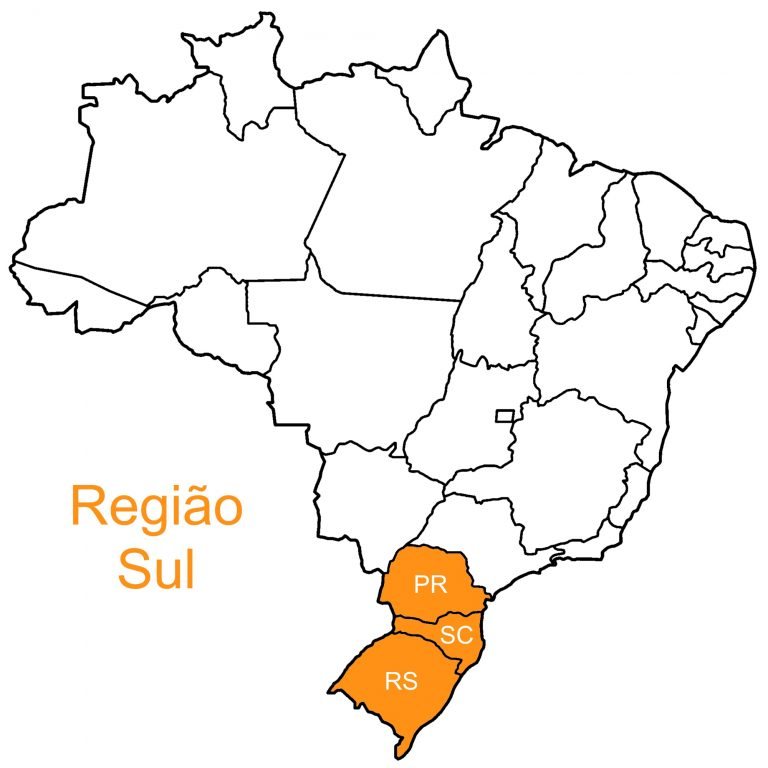

|  | A Região Sul do Brasil é formada por 3 unidades da federação, sendo: Paraná - Curitiba (PR) Santa Catarina - Florianópolis (SC) Rio Grande do Sul - Porto Alegre (RS) Essa região é a menor em aréa mas ao mesmo tempo é a terceira mais populosa, sendo o Paraná o quinto maior estado do país e o Rio Grande do Sul como o sexto, representando 5,3% da população total. Santa Catarina aparece em décimo lugar. O Sul do Brasil tem como uma de suas características a forte presença europeia em seu processo de colonização e povoamento, e até o clima é muito semelhante, sendo geralmente mais frio do que nas outras partes do Brasil. |
|---|---|